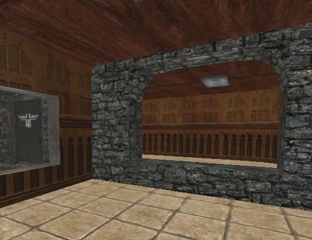
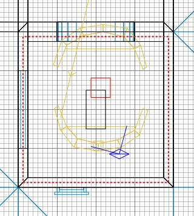

|
Run Radiant and open the map.
Unlike the usual setup, in which players
run around in the volume space between
all the brushes of your map, with water,
players splash/swim about inside the
brush.
To illustrate this, we'll flood one end
of the little building we've made.
Block off one end of the room by making a
low wall as shown. It's caulked and
been made Detail, and had some brick texture
applied.

Then create a brush that is just a little
bit lower than this new wall, but has edges
that extend a little way into the floor and
into the surrounding walls, rather than
meeting them flush. Use grid scale 4
to do this. I have filtered models to
make the view clearer. See how the
brush goes into its surrounding walls (and
the ground, not visible in the overhead
view).

Click textures/liquids/liquids_sd
and select the siwa_waternodraw to
texture the whole brush. Then select
just the surface face of the brush and apply
siwa_water. Then press ESC.
Only the surface needs to be visibly
textured with water, the other faces won't
be visible, but they can't just be caulk
etc, they have to be a water-type shader;
the siwa_waternodraw will do fine.
Save and compile the map, and go and
splash around in it in ET. If it were
deeper you would be able to swim in it.
|